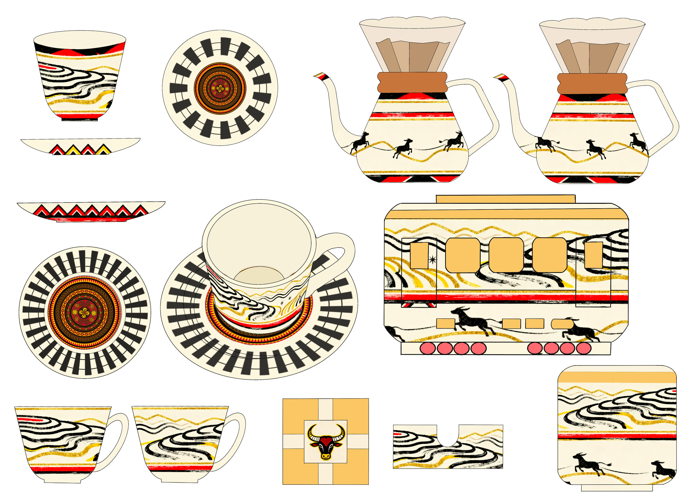
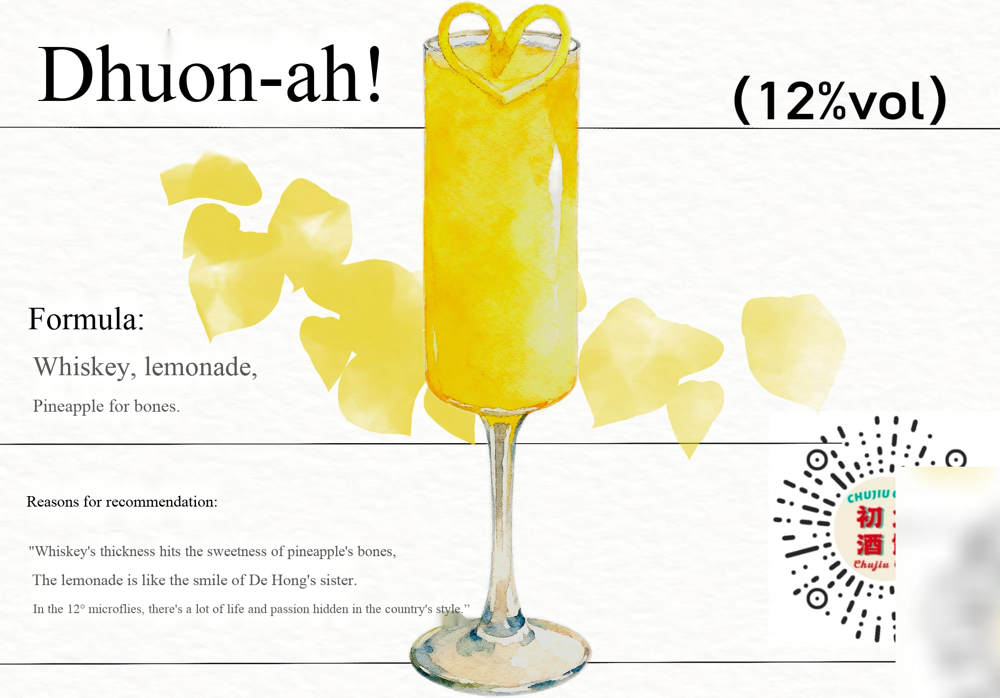

Café & bar · Commission
INTERLUDE
One identity for a café by day and a bar by night.
We designed the illustration, tableware graphics, packaging and mobile ordering screens for a coffee bar that runs from morning coffee to evening drinks.
Shown under the working title INTERLUDE. Original brand information and QR codes have been removed. Visual identity and illustration by North Window Light.
Problem
Two rhythms, one room.
The shop serves coffee by day and drinks by night. It needed one look that feels easy in the morning and still warm after dark, and that carries from the cup to the phone.

INTER
LUDE
A toast, held still
A toast, held still,
to remember gathering.
We drew a shared toast as the core illustration. Hand-drawn lines and warm colour keep the mood social and relaxed.
A warm, short palette
Warm ivory, terracotta and ink black form the core; market yellow and deep green are accents. Flowing lines, animals and ring motifs repeat on tableware, packaging and screen cards.

Hand-drawn / Tactile / Sociable / Warm
From flat graphics to real objects
Cups carry the flowing lines, saucers the ring graphic; bags and menus use less pattern. We tested material, proportion and the look under shop lighting in application images.

The shop's language on the phone
The ordering screens keep the brand colours and outlined cards instead of a stock template, so dine-in, pick-up and membership are clear at a glance. The path is simple: attract, select, order.
Welcome to today’s interlude
Mobile ordering home screen
The key visual holds atmosphere, the cards hold actions, and brand color helps orientation.
A story for every drink
Drink cards list name, strength, recipe and a reason to try it. A short line, "Filter the rush, extract the life.", works across windows, posters and the ordering page.

“Filter the rush,
extract the life.”
Outcome
One brand,
two rhythms.
The same visual rules now run through illustration, tableware, packaging and mobile ordering, from the first coffee of the day to the last drink at night. Parts of the system are now in use in the shop.
View other projects ↗